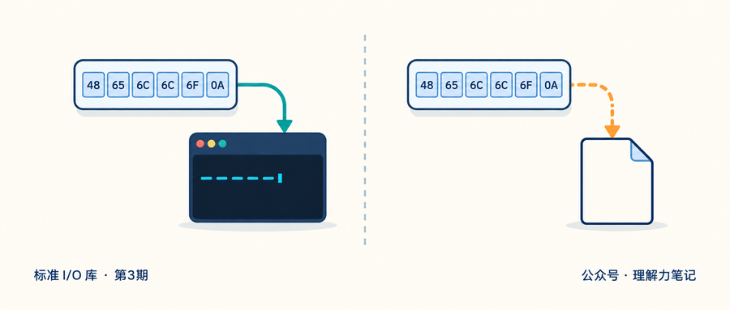
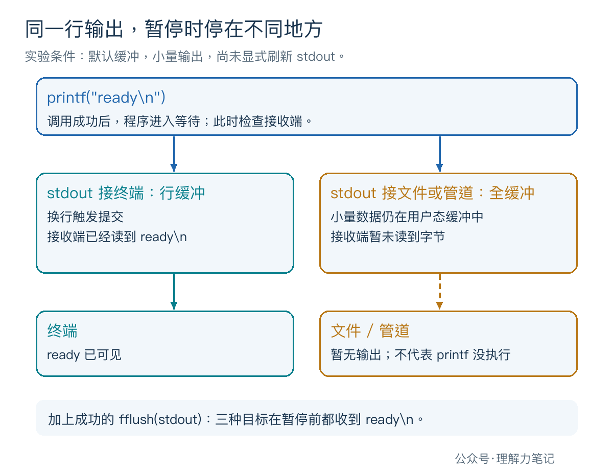
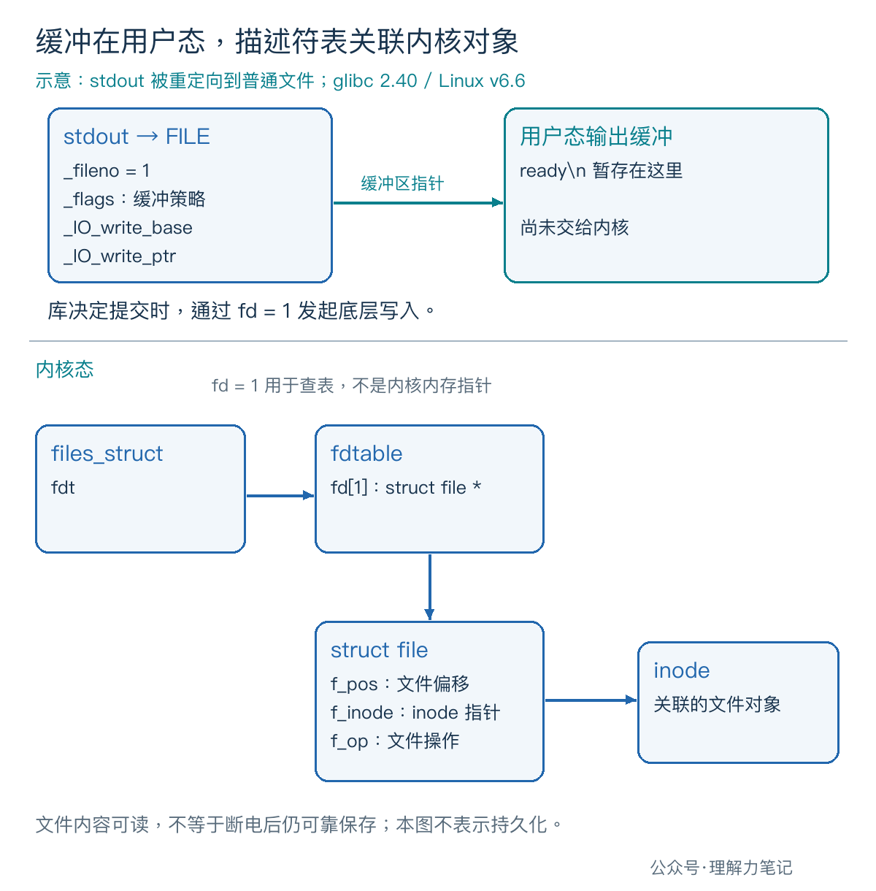

程序在终端里会及时打印进度，加上 > out.txt 以后，文件却迟迟没有内容。检查代码，printf 已经执行，字符串末尾也有 。
在 Linux/glibc 的默认配置下，stdout 接终端通常是行缓冲，接普通文件或管道通常是全缓冲。 换行可以触发行缓冲的输出，却不会普遍地刷新全缓冲。需要在某个时间点提交输出，应调用
fflush(stdout)并检查返回值。
这一次，先看字节有没有离开 C 库的用户态缓冲。文件是否持久化，是后面另一层的问题。
这篇文章怎么读？
| 你是谁 | 看哪一章 | 会得到什么 |
|---|---|---|
| 搜索者 / 被推荐者 | 第一章 · 先解决问题 | 复现终端、文件和管道的输出差异 |
| 学习者 | 第二章 · 机制解释 | 分清三种缓冲和三个标准流 |
| 编程者 | 第三章 · 工程使用 | 在需要及时输出的位置刷新并处理失败 |
| 求职者 | 第四章 · 面试提炼 | 说清换行、stderr 和正常退出的边界 |
下面的程序先输出 ready，再打印一条检查点提示，等待回车。等待期间就能观察目标里有没有数据，不必猜测计算耗时。
它有三个选项：newline 输出带换行的文本；partial 输出不带换行的 ready>；flush 在带换行的输出后立即调用 fflush(stdout)。
保存为 stdout_buffer.c：
检查点写到 stderr，随后明确刷新 stderr。它只用来表示程序已经执行到等待位置，不能把这条提示当成 stdout 已经输出的证据。
等待使用 POSIX read，并重试 EINTR，也就是读取被信号中断的情况。这里没有用 scanf 或 getchar，是为了避开标准 I/O 读取输入时可能附带的行缓冲刷新，让实验只比较 stdout 的行为。
本次实测环境为 macOS 14.8.8、x86_64、Apple clang 16.0.0。自动验收用 PTY，也就是伪终端，作为终端输出目标；Linux/glibc 行为通过源码另行核对。
在实验目录编译，再逐条运行下面的命令。重定向会创建或清空同名 out.txt，请使用测试文件。
每次看到 [checkpoint] press Enter 后，先观察，再按回车让程序结束。重定向那一轮，可以在另一个终端、同一目录里运行 cat out.txt，查看暂停期间的内容。
把参数换成 partial 和 flush，就能重复另外两组对照。自动验收在收到检查点后读取目标字节，再通过独立的输入管道放行程序。下表记录的是放行之前的 stdout 内容，不包含 stderr 提示； 表示实际的换行字节。
| 输出方式 | 接终端（PTY） | 接普通文件 | 接管道 |
|---|---|---|---|
newline：带换行 |
"ready\n" |
无字节 | 无字节 |
partial：不带换行 |
无字节 | 无字节 | 无字节 |
flush：带换行后显式刷新 |
"ready\n" |
"ready\n" |
"ready\n" |
放行后，程序输出 done，检查最终的 fflush(stdout)，然后返回。newline 和 flush 的最终 stdout 都是：
partial 的最终内容是 ready> done 后接换行。这说明此前缺少的是输出时机，并不能据此判断那次 printf 没有执行。

实验只用了几个字节，没有把缓冲区装满，也没有测量系统调用次数。较大的输出可能在函数返回前就触发底层写入，不能从这个小实验推出“重定向后一律等到退出才输出”。
行缓冲把换行作为一个常见的提交时机。缓冲区用满、显式刷新、关闭流等情况也可能让数据输出，因此“没有换行就永远不会输出”同样不对。
全缓冲允许库把一批字符积累起来再提交。小量输出中的换行通常只是一个普通字符，不会单独触发提交；缓冲空间不足、显式刷新、关闭或正常退出等才会让这些字节继续向下走。全缓冲也不意味着所有写入都必须先攒满固定容量。
无缓冲尽快把输出交给底层，不等待凑出一整行或一批数据。它描述的是标准 I/O 库的策略，不能理解成绕过所有内核缓冲，也不能推出每个字符必然对应一次系统调用。
程序启动时，stdin 用于常规输入，stdout 用于常规输出，stderr 用于诊断输出。在 POSIX 程序启动时，它们分别关联 fd 0、1、2。
POSIX 对默认缓冲的表述是：stderr 不应是全缓冲；stdin 和 stdout 在被确定为非交互设备时是全缓冲。 “不全缓冲”不等于规范要求所有实现都必须“完全无缓冲”。glibc 的实现则把 stderr 初始化为无缓冲。
对于 stdout，glibc 2.40 的 filedoalloc.c 会在分配文件缓冲时检查设备类型；发现它关联终端，就设置行缓冲标志。stdfiles.c 负责标准流初始对象和标志。这里是实现说明，不意味着 C 标准规定每个库都必须用这些字段或这条检测路径。
在 shell 中启动 ./program > out.txt 或 ./program | consumer 时，stdout 已经接到了文件或管道。你虽然仍在终端敲命令，程序的 stdout 却不再是终端。IDE 输出面板也可能通过管道收集文本，不能只按窗口外观判断目标类型。

以重定向到普通文件为例，用户态 FILE 记录缓冲策略、待写区域和关联的 fd。库决定提交时，才通过这个 fd 进入底层写入路径。
在 Linux 内核中，files_struct 关联描述符表，fdtable 的 fd[1] 槽位保存 struct file 指针；打开文件对象再通过 f_inode 关联 inode，并维护文件偏移 f_pos。stdio 的缓冲区与这些内核对象分处两层。
glibc 的 fileops.c 在行缓冲输出中检查换行，并在需要时进入底层写入；普通文件写路径最终使用流的 _fileno。本篇没有实测 Linux 的调用次数，图中字段依据 glibc 2.40 和 Linux v6.6 源码。
实验暂停时文件还是空的，不能直接归因于“数据已经到内核，只是磁盘太慢”。显式刷新后，另一个进程能读到文件内容，也不等于已经完成持久化。
提示用户输入、报告一个重要阶段已经结束，都是明确的输出时机。可以先输出内容，再调用 fflush(stdout)，成功后才继续等待输入或执行长时间计算。示例的 flush 分支就在输出 ready 后、进入等待前做这件事。
需要整个流采用不同策略时，可以考虑 setvbuf，但必须遵守它的设置时机和缓冲区生命周期要求，后续专篇再展开。本篇没有调用它，比较的是默认行为。
不要仅靠增加 修复重定向延迟；也不必为让进度及时出现，把所有正常结果都改写到 stderr。两者有不同用途。> out.txt 通常只重定向 stdout，所以你仍可能看到 stderr 上的提示，这不代表文件输出已经完成。
printf 成功时，字符可能仍在用户态缓冲。真正提交时，空间或写入限制等问题才可能暴露。因此既要检查 printf，也要检查 fflush；后者失败返回 EOF，在 POSIX 下还会设置 errno。
验证时，把测试子进程的可写文件大小限制为 0，stdout 接到普通文件。newline 模式能先到达检查点，却在最终刷新时报出 fflush final: File too large，退出状态为 1。flush 模式则在检查点之前就报告刷新失败。
示例发生错误后保留失败状态，并在退出前尝试提交剩余 stdout 数据；持续的底层故障可能因此报告两次刷新错误。它没有实现非阻塞输出、断开的管道或业务重试协议，不能直接当成这些场景的完整处理框架。
从 main 正常返回或调用 exit，会进入标准流的正常退出处理，刷新尚未写出的数据。这能解释某些程序为什么一直没输出，结束时才一口气出现。
但刷新发生在退出阶段，就无法承担运行期间的进度通知；依赖退出自动刷新，也难以把那时发生的写入错误反馈成正确的成功或失败状态。本例因此在返回前显式检查最终刷新。异常终止也不能当作已经完成正常退出刷新。
管道还可能串着多个程序。生产者的 fflush(stdout) 只处理自己的输出流，消费程序若又缓冲了一层，屏幕上仍可能延迟出现结果。排查时要确认延迟发生在哪一段。
为什么终端及时输出，重定向后却延迟？ 默认 stdout 的缓冲方式受输出目标影响：终端通常行缓冲，文件和管道通常全缓冲；同一个换行在两种策略下作用不同。
stderr 一定无缓冲吗？ glibc 默认这样实现；C/POSIX 的要求是它不全缓冲。不要把某个库的默认值说成所有实现都必须相同。
fflush 成功，就说明落盘了吗？ 不能这样推导。它处理流中未写出的数据，持久化还涉及更下层的保证；本篇的实验只验证接收端何时能读到字节。
本文为公众号「理解力笔记」原创。转载请联系作者，并保留出处。